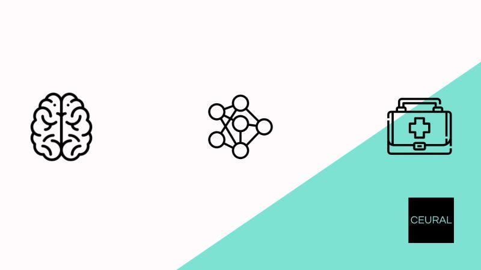
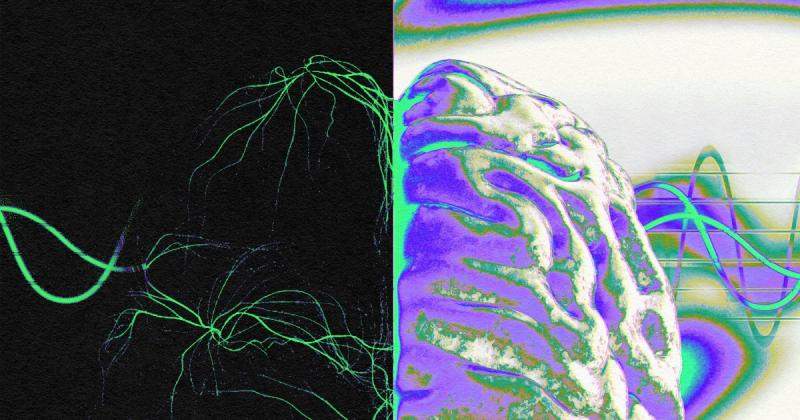
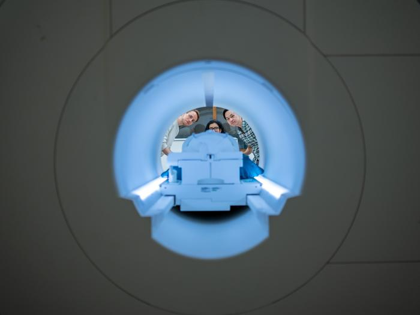

Mind Storms pioneers the
commercialization of cutting-
edge BCI technology, utilizing
advanced Brain Signal
Processing and Generative AI.
Our transformative product
decodes thoughts into spoken
and written language, marking a
breakthrough in accessibility
and affordability..

At Mind Storms, we are reshaping the
landscape of communication
through our innovative BCI solutions.
By harnessing state of the art
Neuroscience and Generative AI, our
products enable users to translate
their thoughts into spoken language,
ensuring a seamless and affordable
way to interface with
computers..

Mind Storms introduces a revolutionary
approach to mind-computer interaction,
making BCI technology accessible to all. We
enable technology adoption by covering
both medical and commercial
headsets. Thanks to user-friendly and
affordable advancement in the realm of
assistive technology, Brain Waves to
Spoken Language technology will be
accessible to everyone, especially those
patients diagnosed with LIS, ALS and
Neuro-motor disabilities.
The Brain Computer Interface will transform people's lives.
It helps people who could neither speak nor move to communicate Mind Storm's Brain Computer Interface
will give people back their voices, allowing them to communicate in ways we thought were lost forever.
The Mind Storm's team's compassion and innovation is a beacon of hope for all non-vocal and paralyzed individuals in the world.
Mission
Our mission at Mind Storms is to make
Brain-Computer Interface (BCI) technology
accessible to everyone. Utilizing Deep
Learning, we enable individuals to convert
their thoughts into text and speech,
fostering affordable communication
through the power of the mind.
Vision
Mind Storms envisions a future where
cutting-edge breakthroughs, fuelled by
Neuroscience and Advanced AI, triumph
over neurological challenges, ensuring
every silenced voice finds renewed
expression and connection.
find out more
about how Mind Storms is transforming lives and restoring lost voice
David is a globally recognized expert in Speech
Technology with a four-decade legacy of innovation.
Trained at MIT and honored with a Ph.D. by Publication
from the University of East Anglia, David has served as CTO
and Chief Science Officer in multiple start-ups. His
expertise extends to managing software development
teams, completing successful outsource projects.